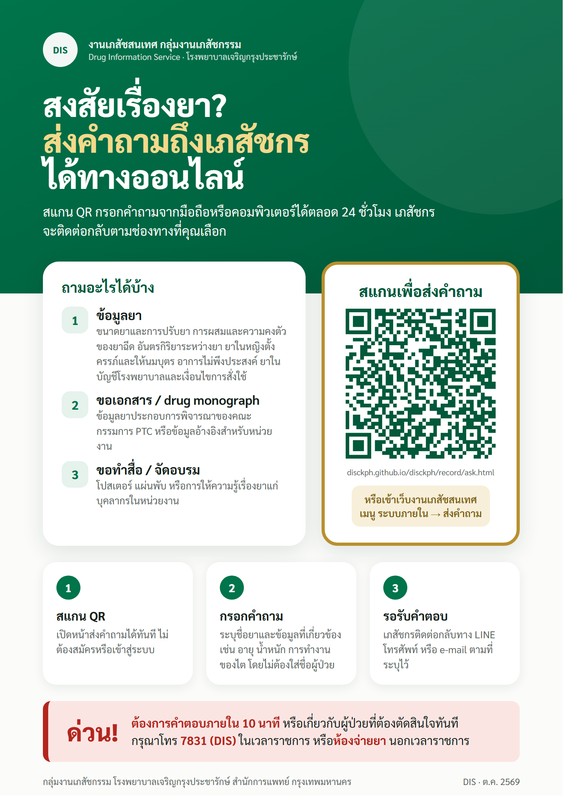

ช่องทางใหม่
สงสัยเรื่องยา? ส่งคำถามถึงเภสัชกรได้ทางออนไลน์
ถามข้อมูลยา ขอเอกสาร/drug monograph หรือขอทำสื่อ/อบรม ส่งได้ตลอด 24 ชั่วโมงจากมือถือหรือคอมพิวเตอร์ เภสัชกรจะติดต่อกลับตามช่องทางที่ระบุ
เรื่องด่วนที่ต้องการคำตอบภายใน 10 นาที กรุณาโทร 7831 (DIS) ในเวลาราชการ หรือห้องจ่ายยา นอกเวลาราชการ

ข่าวและประกาศ
ดูข่าวทั้งหมด →กำลังโหลดข่าว...